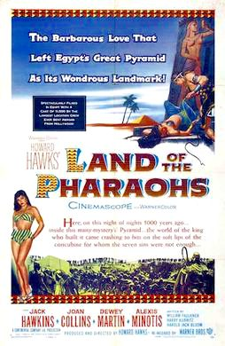

Land of the Pharaohs
Studio: Continental Company
Starring: Jack Hawkins, Joan Collins, James Robertson Justice
Director: Howard Hawks, Paul Helmick
Writer: William Faulkner, Harry Kurnitz, Harold Jack Bloom
Producer: Howard Hawks
Land of the Pharaohs is a 1955 American epic historical drama film in CinemaScope and WarnerColor from Warner Bros. Pictures, produced and directed by Howard Hawks. The cast was headed by Jack Hawkins as Pharaoh Khufu and Joan Collins as one of his wives, Nellifer. The film is a fictional account of the building of the Great Pyramid.
Trivia
- Hawks had between 3,000 and 10,000 extras working each day during the fifty-plus day shooting schedule.
- The government supplied those extras, half of whom were soldiers in the Egyptian Army.
- For scenes showing the pyramid under construction, the film crew cleared the sand away from a 90 ft (27 m) deep shaft that was part of the unfinished pyramid of Baka.
Filming Locations
- Egypt
- The film was shot on location in Egypt and in Rome's Titanus studios.
- Other scenes were shot at a limestone quarry at Tourah, near Cairo, and at Aswan, a granite quarry located 500 miles (800 km) away.
Previous Showings
1 Run • 1 Festival
All runs on record (1):
- May 23 - 24, 2012Howard Hawksw/ Viva Villa!